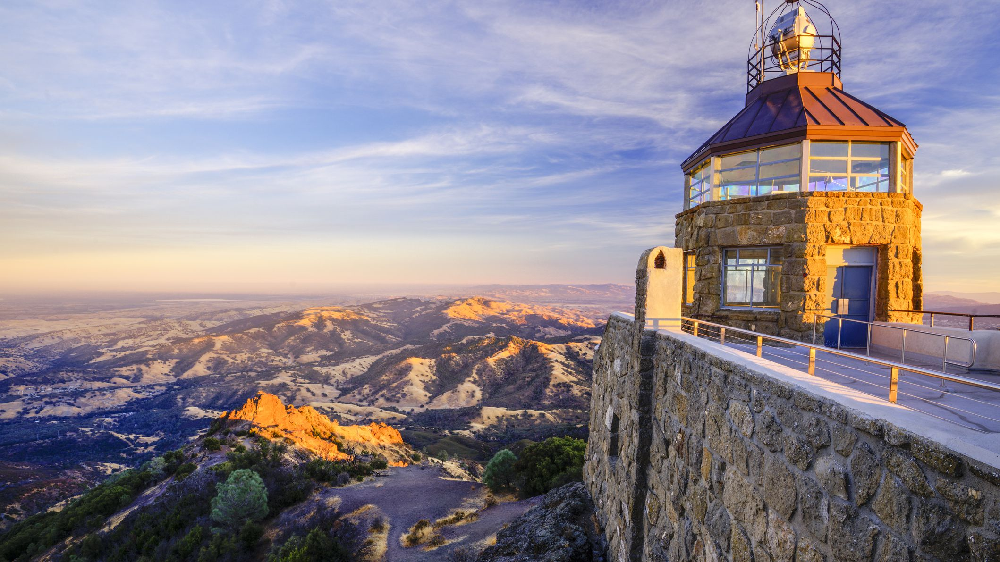

Mount Diablo is a mountain of the Diablo Range, in Contra Costa County of the eastern San Francisco Bay Area in Northern California.
Donner Creek Loop is a beautiful hike along creeks, multiple cascades, and features mountain views. This trail is a great short hike that allows users to escape into the wilderness for a few hours.
The world is so BIG!I'd like to go.
Hiking is one thing that does not require expertise to do unless your plans are to reach the top of Mount Everest.
Hiking is fun because of the joy you get afterward by defeating the challenges like walking for miles while you are still tired. Besides that, the connection between you and nature becomes strong which makes hiking more fun and enjoyable.
Mount Diablo is a mountain of the Diablo Range, in Contra Costa County of the eastern San Francisco Bay Area in Northern California.
Donner Creek Loop is a beautiful hike along creeks, multiple cascades, and features mountain views. This trail is a great short hike that allows users to escape into the wilderness for a few hours.
